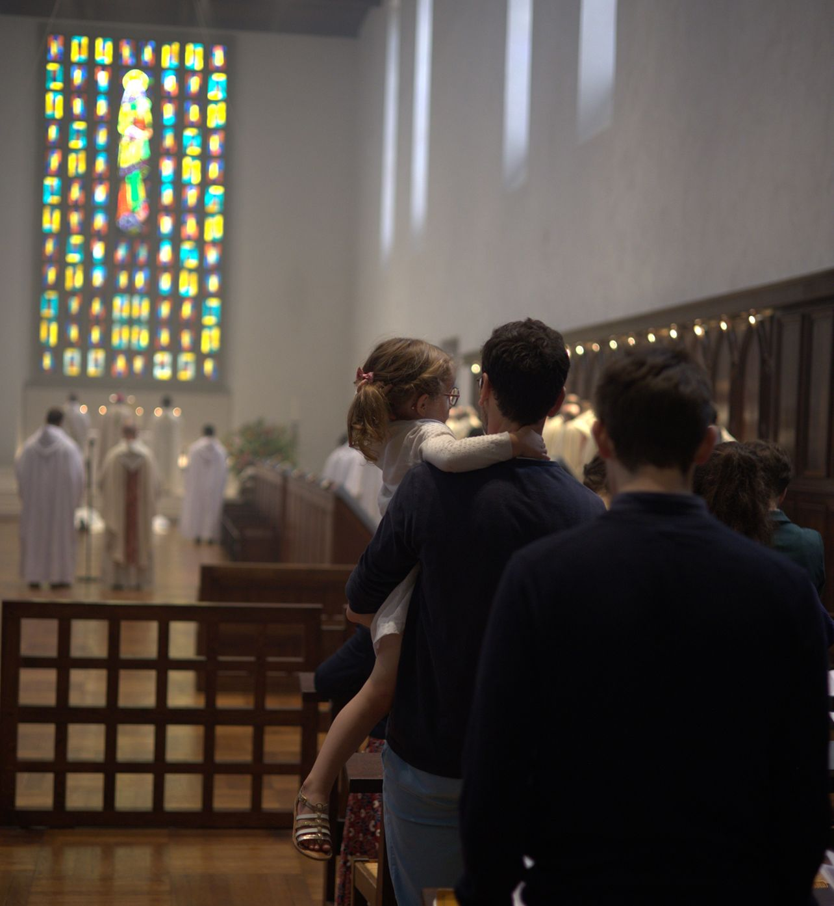
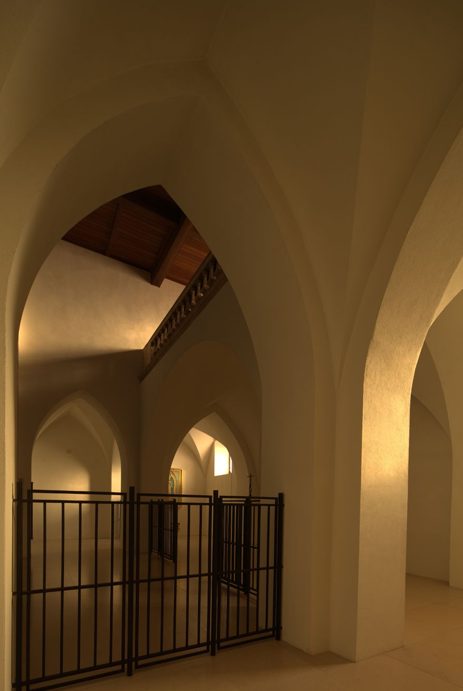
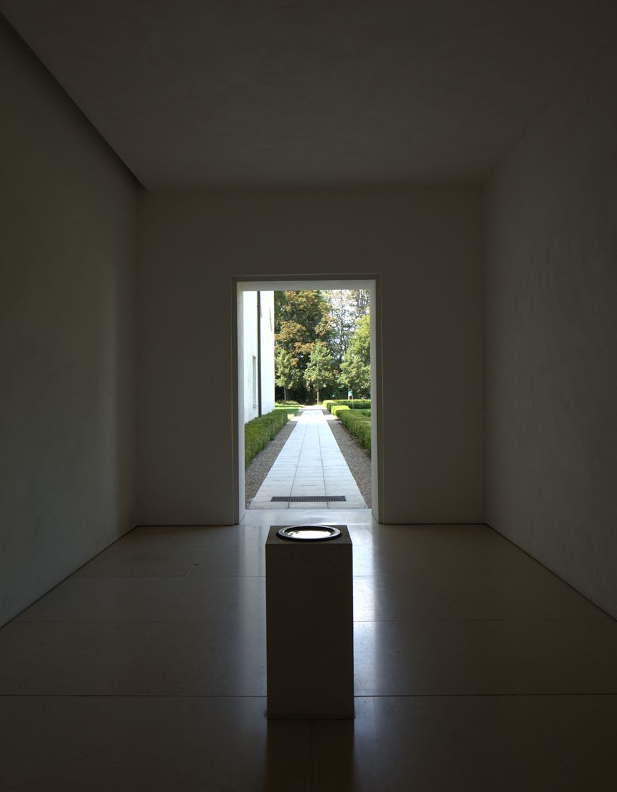

Fidèles à la tradition bénédictine, les moines accordent une grande importance à l’accueil et à l’hospitalité de quiconque souhaite partager pendant quelques jours leur vie de prière et de silence.
L’église abbatiale est accessible aux heures des offices pour qui veut se joindre au chœur des moines. Ces derniers se rassemble dans l’église tout au long du jour pour y chanter les offices liturgiques.
Horaires des offices religieux
La célébration de l’Eucharistie est le cœur de la journée monastique.


À l’entrée du monastère se trouve la porterie, qui comprend l’accueil et le magasin. Vous y découvrirez une large gamme de produits monastiques – dont les nôtres – ainsi que des objets et des livres religieux.
Horaires d’ouverture du magasin
Tout au long de la journée, vous pouvez également visiter notre salle d’exposition, dont l’entrée se situe dans la cour, devant la porterie.
Entre autres, vous aurez la possibilité de visionner un documentaire présentant notre vie monastique : Présence à Dieu.

Si vous souhaitez faire un séjour dans notre hôtellerie, nous recommandons, pour une première visite dans ce lieu de silence, une durée de trois ou quatre jours.
Pour les retraitants, l’église est accessible toute la journée.
Les repas sont pris en silence dans l’une des salles à manger de l’hôtellerie. Un oratoire, une bibliothèque, quelques salles de réunion et des parloirs sont également à leur disposition.
Nous accueillons aussi des groupes de jeunes.
Pour toute demande d’information, n’hésitez pas à nous contacter :